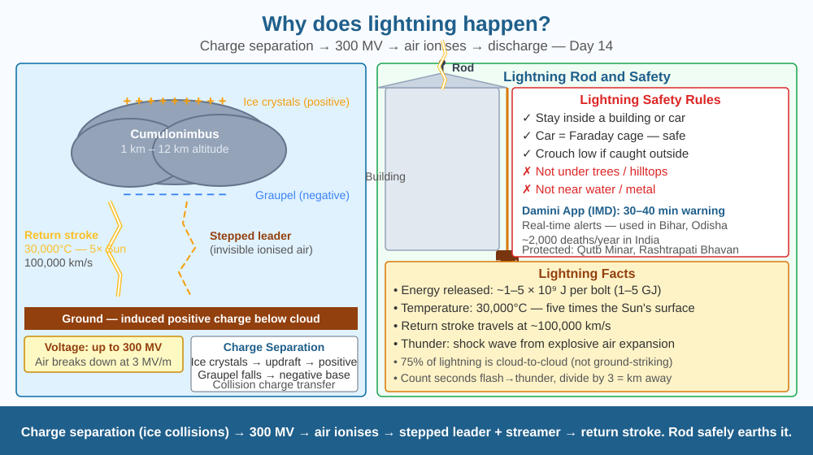

Discover why thunderstorms build up millions of volts of electrical charge — and understand the physics that makes lightning rods, Faraday cages, and storm safety work.
A bolt of lightning releases about 5 billion joules of energy and heats the air around it to 30,000°C — five times hotter than the surface of the Sun. It happens in about 0.2 seconds. Every year, lightning kills an estimated 2,000 people in India — more deaths than from most natural disasters. Yet a lightning rod, a simple pointed metal spike on a rooftop, can protect an entire building. Why do clouds build up millions of volts? And how does a spike of metal prevent catastrophe?
How charge separation occurs in storm clouds:
A cumulonimbus (storm) cloud extends from about 1 km to 12 km altitude. Inside: 1. Strong updrafts carry water droplets and ice crystals upward. 2. Heavier, partially melting ice pellets (graupel) fall downward. 3. When ice crystals collide with graupel, electrons transfer: ice crystals become positively charged, graupel becomes negatively charged. 4. Result: positive charge accumulates at the top of the cloud, negative charge at the bottom. 5. The negative base of the cloud induces a positive charge on the ground below (through electrostatic induction).
Electrical breakdown:
The lightning rod (Franklin rod):
Invented by Benjamin Franklin in 1752. A pointed metal spike connected by a thick copper cable to a buried earth plate. The sharp point concentrates the electric field → ions bleed off → may prevent full discharge by dissipating charge slowly, and if lightning does strike, safely conducts the massive current to earth rather than through the building.
Energy of a lightning bolt:
A single bolt transfers about 5 coulombs of charge across 300 MV → energy = charge × voltage = 5 × 300×10⁶ = 1.5 × 10⁹ joules. However, the discharge lasts only 0.2 s → power = 7.5 × 10⁹ W = 7.5 GW (briefly). In practice, about 1–5 GJ is actually useful energy per bolt.
Think of the storm cloud as a giant capacitor being charged up by a conveyor belt of colliding ice crystals. The conveyor (updraft) continuously separates positive charge (top) from negative charge (bottom). The cloud is like one plate of a capacitor; the ground is the other. As the voltage difference grows, the insulating air between them is under increasing stress. Eventually the air cracks — ionises — and a spark jumps across. The lightning rod gives the spark a preferred, safe path — like a drain for the excess charge.

The diagram shows a cross-section of a storm cloud over a city: the cloud base is negative (blue minus signs) and the top positive (red plus signs). The ground below is shown with induced positive charge. Stepped leaders extend downward from cloud base; streamers extend upward from rooftops. The lightning bolt path follows the channel where they meet. A building on the right has a lightning rod connected by a copper cable to an earth stake — the discharge safely flows through this path. Temperature label: "30,000°C — 5× Sun's surface." A voltage scale shows cloud-to-ground 300 MV.
Rub a plastic ruler vigorously on your hair or a wool cloth. Hold it near small pieces of torn paper — they are attracted and jump to the ruler. Now rub two balloons and hold them near each other — they repel. You are demonstrating charge separation (triboelectric effect) — the same mechanism (friction/contact charge transfer) that happens between ice crystals and graupel inside storm clouds. The difference is scale: your ruler builds up ~10,000 V; a storm cloud builds up ~300,000,000 V.
Ball lightning is a rare phenomenon — glowing spheres of light that float for seconds during thunderstorms and pass through glass windows. Scientists have recorded it, but no fully accepted explanation exists. Proposed mechanisms include: plasma vortices, microwave trapping, or quantum vacuum effects. Even ordinary lightning is not fully understood — the exact mechanism of stepped leader formation was a topic of active research as recently as the 2020s. What does it mean for science that we use lightning protection every day yet cannot fully model how lightning initiates at the microscopic level?
What causes the electrical discharge we see as lightning?
Why is understanding the charge-separation mechanism more useful than knowing lightning is dangerous?
If a tall metal rod were placed on a building during a storm, what would you predict?
(a) A lightning bolt transfers 5 coulombs of charge through a potential difference of 3 × 10⁸ V. Calculate the energy released (E = Q × V). (b) If the bolt lasts 0.25 seconds, calculate the average power. (c) A standard Indian home uses 5 kWh of electricity per day. How many homes could be powered for one day by the energy in one lightning bolt? (Convert J to kWh: 1 kWh = 3.6 × 10⁶ J.) (d) Why is it impractical to harvest lightning for electricity?
The thunder you hear is not the lightning itself — it is the explosive expansion of air heated to 30,000°C in microseconds. This superheated channel of air expands faster than the speed of sound, creating a shock wave — thunder. Light reaches you almost instantly (speed of light: 3×10⁸ m/s). Sound takes about 3 seconds per kilometre. So by counting seconds between the flash and the thunder and dividing by 3, you can calculate how many kilometres away the lightning struck. At 30 km away, you would see the flash ~0.0001 seconds after it occurs, but hear the thunder 10 seconds later.
Charge separation in storm clouds (ice crystal collisions) builds up to 300 MV. Air ionises when field exceeds 3 MV/m → stepped leader bridges cloud to ground → return stroke = lightning. Lightning rods safely conduct discharge to earth.